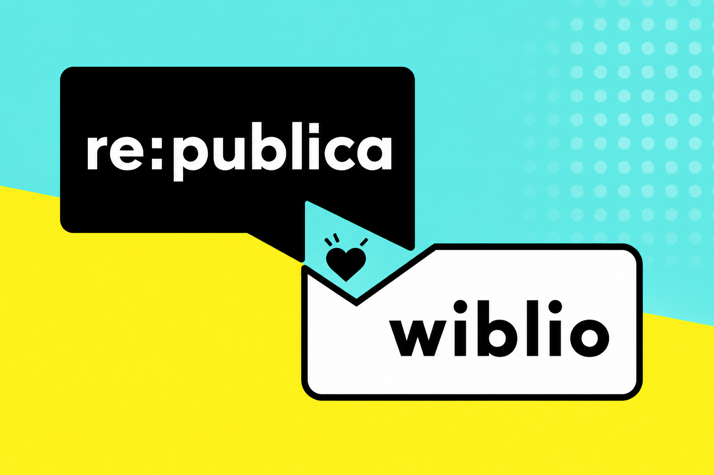

Aus Begegnung wird Community.
Wiblio ist der digitale öffentliche Raum der Berliner Bibliotheken. Für Talks, Workshops und Communities, die nach dem Event bestehen bleiben.
Statt sich in WhatsApp-Gruppen, LinkedIn-Kommentaren oder Plattformen wie Facebook zu verlieren, schafft Wiblio EINEN kuratierten Ort für Austausch, Wissen und Zusammenarbeit.

Preview zur re:publica: frühe Version, echter Austausch, offenes Feedback.
Gute Gespräche, neue Kontakte und gemeinsames Wissen auch nach dem Veranstaltungsende.
Bibliotheken sind Orte der Begegnung, Bildung und Teilhabe. Wiblio überträgt diese Werte in einen digitalen Raum, ohne Werbung, ohne Plattformlogik, ohne Abhängigkeit von kommerziellen Netzwerken.
Wiblio richtet sich an Menschen und Organisationen, die Austausch nicht den GAFA-Konzernen überlassen wollen.
Nach dem Talk austauschen
Fragen sammeln, Quellen teilen, Diskussionen fortsetzen und mit interessierten Menschen in Kontakt bleiben.
Eine Community aufbauen
Stiftungen, Initiativen, Medien und Kulturakteure können Zielgruppen an einem vertrauenswürdigen Ort zusammenbringen.
Nicht nur konsumieren
Mitmachen, Fragen stellen, Wissen beisteuern und Menschen mit ähnlichen Interessen wiederfinden.
Wiblio macht aus einem Moment einen gemeinsamen Arbeits- und Austauschraum.
Talk verlängern
Ein Vortrag endet nicht mit der letzten Folie. Materialien, Fragen und Diskussionen bleiben an einem Ort verfügbar.
Workshop begleiten
Teilnehmende können Ergebnisse dokumentieren, gemeinsam weiterarbeiten und nächste Schritte abstimmen.
Community starten
Aus einem Treffen wird ein dauerhafter Raum für Austausch, Zusammenarbeit und neue Kooperationen.
Weil digitale Räume Vertrauen, Regeln und Gastgeber:innen brauchen.
Gemeinwohl statt Reichweite
Wiblio ist kein Werbenetzwerk und kein Geschäftsmodell auf Basis von Aufmerksamkeit und Daten.
Kuratierter Raum
Bibliotheken stehen für Zugang, Orientierung und zivilisierten Austausch. Genau diese Qualität braucht das Digitale.
Für viele, nicht für wenige
Wiblio erleichtert die digitale Teilhabe und ergänzt das Bibliotheksangebot.
Wiblio kombiniert Community, Wissen und Organisation in einem gemeinsamen Arbeitsraum.
Austausch
Forum und Chat für Diskussionen, Fragen und schnelle Abstimmung.
Wissen
Wiki, kollaborative Dokumente und geteilte Materialien.
Organisation
Events, Termine, Abstimmungen und nächste Schritte an einem Ort.
Community
Gruppen, Rollen und Räume für einzelne Themen, Partner und Veranstaltungen.
Teste Wiblio als Preview.
Diese Wiblio-Version ist eine Vorschau und soll zur re:publica zeigen, wie digitale Community-Räume rund um Veranstaltungen funktionieren können.
Temporäre Preview für die re:publica 2026
Funktionen, Design, Inhalte und Zugänge können sich verändern oder gelöscht werden. Die Preview dient dazu, konkrete Nutzungssituationen temporär zu testen und Feedback einzusammeln.